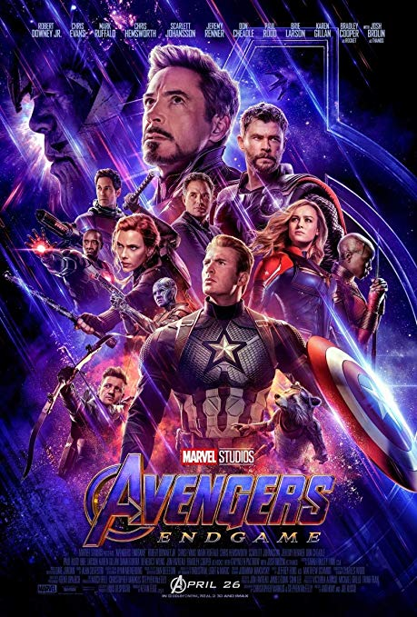
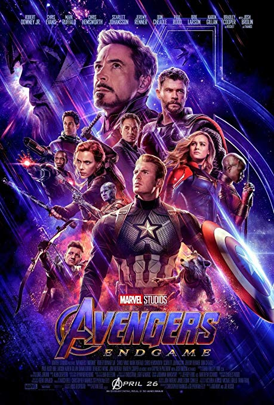
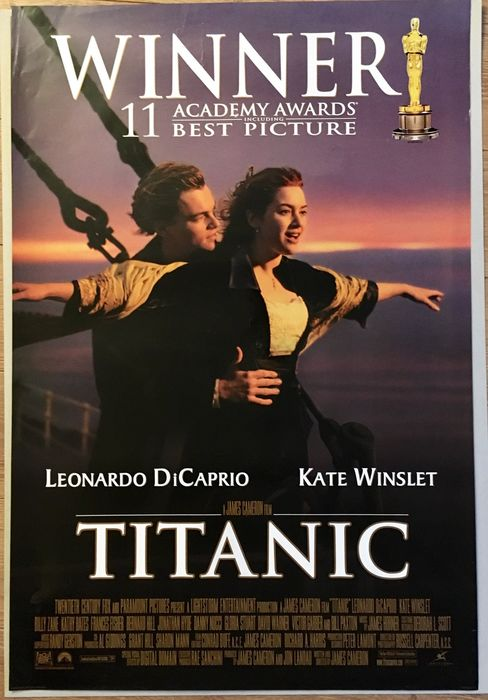
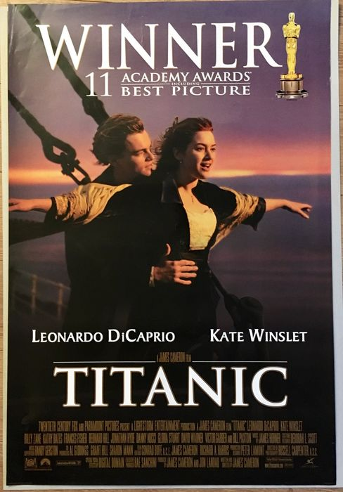

Top Grossing Films
Avengers Endgame


Where does one begin? When it comes to Avengers: Endgame, that question is not so much an expression of wanton enthusiasm as a practical challenge in evaluating the destination toward which Kevin Feige and company have been steering story and viewer alike for the past 11 years and 21 films. Though there have been plenty of three-hour-plus movies and even a few 20+ entry movie franchises, there’s really nothing to compare with what Disney and Marvel Studios have pulled off, either in terms of size, quality and consistency of cast (a moment of silence for Edward Norton and Terrence Howard), or in how narrow the chronological window, all things considered, those movies were produced. Though we’ve praised it often, casting remains the cornerstone of the MCU. Whether by pitch-perfect distillations of decades-old comic book characters (Captain American, Thor, Spider-Man) or charisma-fueled reinventions of same (Iron Man, Ant-Man, Star-Lord), the MCU’s batting average in terms of casting is not only practically obscene.... It’s a crucial ingredient in ensuring the thematic and emotional payoff (and box office payday) of Endgame. Moviegoers have been living with these actors, as these characters, for over a decade. For many, this version of these characters is the only one they know. This is why the sudden ashification of so many heroes at the end of Infinity War hit even the most cynical comic book veterans right in the feels and left less hardened viewers confused and distraught. It’s also why, as Avengers: Endgame opens (after another swift kick to the stomach just in case we’ve forgotten the toll of that snap), the audience cares about not just what the surviving heroes are going to do, but how they are doing in general. It gives the film an emotional resonance that’s unusual not only in pulpier genre offerings but in films in general. This connection makes the quiet moments as valuable to the viewer as the spectacle, and for all the fireworks in the third act, Avengers: Endgame is very much a film of quiet moments and small yet potent emotional payoffs. Comic book fans know the thrill of following all your favorite characters through a multi-issue storyline that culminates in a “universe at stake” ending. Now, thanks to 21 movies in 11 years and one massive, satisfying three-hour finale, moviegoers do, too. —Michael Burgin
Avatar

It makes sense that Avatar is the second highest grossing movie ever made: Irony and insincerity have no place in its extended universe. Whether or not James Cameron intended to crib the world of Pandora and its futuristic inhabitants from practically every fantastical ur-text ever conceived, it hardly matters, because Avatar is modern mythmaking at its most foundational. Cameron still seems to believe that “the movies” can give audiences a transformative experience, so every sinew of his film bears the Herculean effort of truly genius worldbuilding, telling the simple story of Jake Sully (Sam Worthington) and his Dances with Wolves-like saving of the Na’vi, natives to the planet of Pandora, from the destructive forces of colonialism. Cameron wants us to care about this world as much as Jake Sully, and by extension James Cameron, does, crafting flora and fauna with borderline sociopathic obsessiveness. But Cameron’s proven us wrong countless times before. —Dom Sinacola
Titanic


Almost 20 years after its theatrical debut, James Cameron’s blockbuster epic is still so ubiquitous in the pop culture zeitgeist, its filmmaking marvels are drowned out by young Kate-and-Leo nostalgia and that damned Celine Dion caterwaul (not to mention the now late James Horner’s iconic score). Cameron’s ear for dialogue may be woefully leaden, but he’s a shrewd storyteller, plunking a Romeo-and-Juliet redux aboard the doomed ocean liner and flanking the fictional romance with historical details, groundbreaking special effects and jaw-dropping visuals. The narrative lapses are at times dumbfounding-let’s face it, old Rose, who tosses a priceless artifact into the abyss after waxing ad nauseam about herself, is a thoughtless jerk—and the aforementioned dialogue is awful (to say nothing of Billy Zane doing his best mustache-twirling silent movie villain) but Titanic remains a painstaking testament to the all-in Hollywood spectacle.—Amanda Schurr